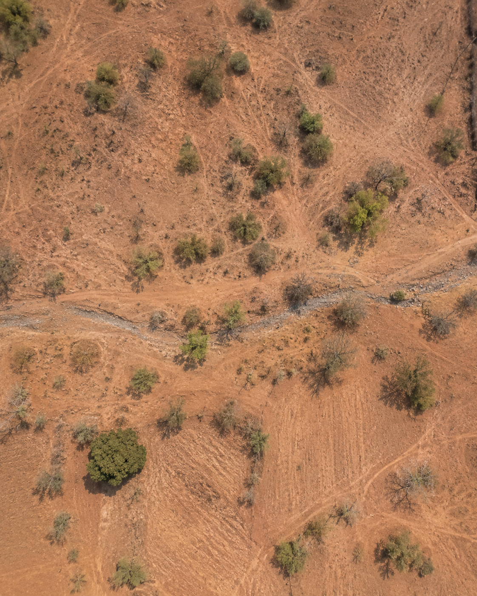
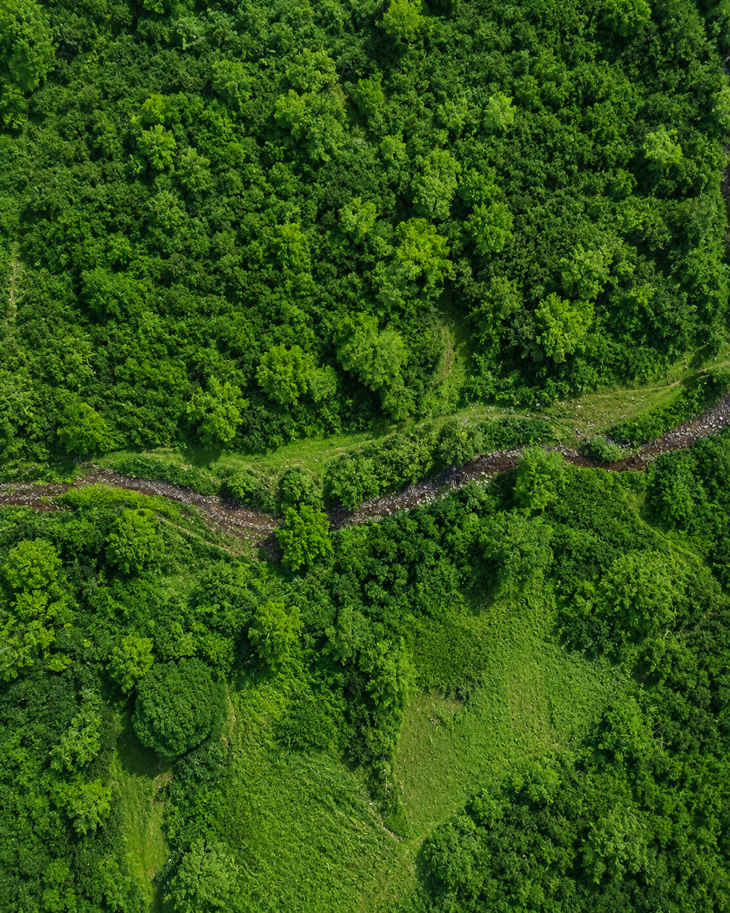

Twenty-two years of NASA satellite data reveal how vegetation cover shifted across every Indian state and union territory, from 2001 to 2023.


2001 2023Hover or tap the image to see 2023 →
Between 2001 and 2023, satellites tracked vegetation cover across every state, revealing which regions greened and which lost ground.
MODIS satellite data was sampled at 250-meter resolution across six benchmark years.
National average vegetation cover gained across the full study period, 2001 to 2023.
This Google Earth Engine App animates vegetation cover across India for 2001, 2005, 2010, 2015, 2020, and 2023. Use the on-map controls to pause, skip, or jump to a year.
How it was built, what the numbers say, what actually changed, and where it all comes from.
MODIS/061/MOD44B Vegetation Continuous Fields, NASA Terra satellite. 250m resolution, annual composites.
36 states and union territories. Years: 2001, 2005, 2010, 2015, 2020, 2023. Classified into 5 bands, Very Low to Very High cover.
Google Earth Engine, area-weighted mean per state, corrected for latitude-dependent pixel size.
| State | 2001 (%) | 2023 (%) | Change |
|---|
National cover rose 76.9% to 80.6%, a 3.7-point gain. Some states greened sharply, a few slipped back.
Jharkhand (+10.1), Gujarat (+9.1), Bihar (+9.0), UP (+8.8), and Rajasthan (+8.4) gained the most.
Lakshadweep (−4.6), Andaman & Nicobar (−1.7), and Manipur (−1.3) declined the most.
This measures cover, not cause. No policy or climate driver is credited or blamed without more data.
DiMiceli, C., et al. (2022). MODIS/Terra Vegetation Continuous Fields Yearly L3 Global 250m SIN Grid V061. NASA LP DAAC.
GEE CatalogSurvey of India administrative boundaries, uploaded as a GEE asset. Only the derived CSV is stored in this repository.
Processed on Google Earth Engine. MODIS MOD44B V6.1 provided by NASA and USGS via LP DAAC.